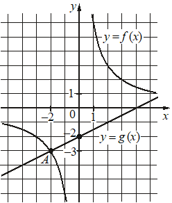

Впишите правильный ответ.
На рисунке изображены графики функций видов f( x )= k x и g( x )=ax+b, пересекающиеся в точках A и B. Найдите абсциссу точки B.

КЭС: 3.1 Функция, способы задания функции. График функции. Взаимно обратные функции. Чётные и нечётные функции. Периодические функции
Тип ответа: Краткий ответ
Источник ФИПИ